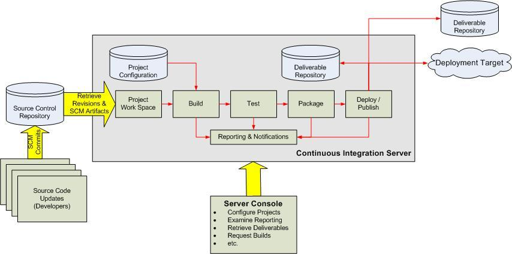

持续集成(CI)已成为当前许多软件开发团队在整个软件开发生命周期内侧重于保证代码质量的常见做法。它是一种实践，旨在缓和和稳固软件的构建过程。并且能够帮助您的开发团队应对如下挑战：
- 软件构建自动化
使用CI，您只要按一下按钮，它会依照预先制定的时间表，或者针对某一特定事件，就开始对目标软件进行一次构建过程。想想吧，尤其您从头到尾构建一个构 件的时候，这个构建过程应该不会是局限于某一特定IDE、电脑或者个人的。
- 构建可持续的自动化检查
CI系统能够设定成持续地执行新增或修改后签入的源代码，也就是说，当软件开发团队需要周期性的检查新增或修改后的代码时，CI系统会不断确认这些新代 码是否破坏了原有软件的成功构建。这减少了开发者们在检查彼此相互依存的代码中变化情况需要花费的时间和精力。
- 构建可持续的自动化测试
一个构建检查的扩展部分，这个过程确保当新增或修改代码时不会导致预先制定的一套测试在构建构件后失败。构建检查和测试一样，失败都会触发通知单 (Email,RSS等等)给相关的当事人，告知对方一次构建或者一些测试失败了。
- 生成后后续过程的自动化
一旦自动化检查和测试的构建已经完成，一个软件构件的构建周期中可能也需要一些额外的任务，诸如生成文档、打包软件、部署构件到一个运行环境或者软件仓 库。这样，构件才能更迅速地提供给用户使用。
实现一个CI服务器你需要的最低要求是，一个比较容易获取的源代码仓库(包含源代码)，一套构建脚本和程序，一系列围绕构件构建的可执行测试。
下图概括了CI系统的基本结构：

该系统的各个组成部分是按如下顺序来发挥作用的
- 开发者检查新增和修改到源代码仓库后的代码。
- CI服务器会为每一个项目创建了一个单独的工作区。当预设或请求一次新的构建时，它将把源代码仓库的源码存放到对应的工作区，哪里构建就执行哪里。
- CI服务器会在新近创建或者更新的工作区内执行构建过程。
- 一旦构建完成，CI服务器就会在一个新的构件中选择性地执行原先定义的一套测试。如果构建失败，相关责任人将会通过电子邮件、即时短信或者其他的 方式获取到(失败)通知。
- 如果构建成功，这个构件会被打包并转移到一个部署目标(如应用服务器) 和/或存储为软件仓库中的一个新版本。这个如软件仓库可以是CI服务器的一部分，也可以是一个外部的仓库，诸如一个文件服务器或者像Java.net、SourceForge分发的一个有效网址。源代码仓库和构件仓库是可以分开的，实际上它可以利用一些根本没有包含任何源代码控制系统(CVS、SVN、 CSS等等)的CI服务器。
- CI服务器通常会用某种控制台来进行项目的配置和调试，并且根据请求发起相应的操作，诸如即时构建、生成报告，或者检索一些构建好的构件。
而 Hudson 就是这么一个CI服务器。它最初是由Kohsuke Kawaguchi编写的，他是一名Sun工程师，在2005年2月宣布释放了他的博客。现在已经有大约154个版本。
以下的一些是使用hudson的理由：
- 它是所有CI产品在安装和配置上中最简单的。
- 基于Web的用户界面非常友好、直观和灵活，在许多情况下，还对需单独配置的部分提供了基于AJAX的即时反馈。
- Hudson是基于java开发的(如果你是一个Java开发人员，这是非常有用的)，但它不仅限于构建基于Java的软件。
- Hudson本身是一个很简洁的组件，但它提供了一组很明确和可扩展API的Hudson组件。这批组成一个大的类库的Hudson组件反过来又丰富了Hudson的功能；它们都是开源的，而且它们可以直接通过Hudson的控制台来进行安装。
Hudsonn的主要目标是监控软件开发流程，快速显示问题，让开发人员马上解决问题。所以能保证开发人员以及相关人员省时省力提高开发效率。
CI 服务器在整个开发过程中的主要作用是控制：当服务器在代码存储库中探测到修改时，它将运行构建的任务委托给构建过程本身。如果构建失败了，那么 CI 务器将通知相关方面，然后继续监视存储库。它的角色看起来是被动的；但是，它是快速反映问题的关键。
特别它在和maven2的整合上具有以下优点：
- Hudson一切配置都可以在友好的界面上完成，包括其自身的配置和项目特有的配置，值得注意的是有些配置如MAVEN_HOME和Email Server，只需要配置一次，所有的项目就都能用了。XML？不再需要了，不过如果坚持，也可以通过XML配置。
- 支持Maven的模块(Module)，Hudson对Maven2做了优化，因此它能自动识别Module，每个Module本身也是一个 build job。相当灵活。
- 测试报告聚合，所有模块的测试报告都被聚合在一起了，结果一目了然，使用诸如CruiseControl其他CI，这几乎是件不可能完成的任务。
- 构件指纹(artifact fingerprint)，每次build的结果构件都被很好的自动管理，无需任何配置就可以方便的浏览下载。